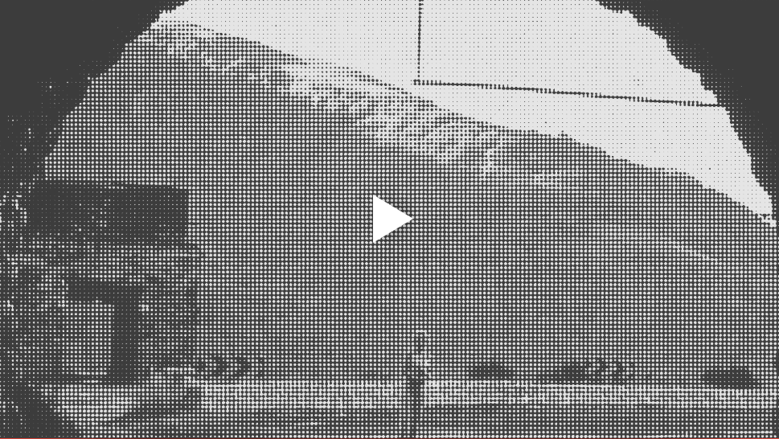

56. THE VANISHING (1988)
Directed by George Sluizer

Do you agree?
An ever growing collection featuring some of the best scenes in horror.
“Best Horror Scenes” is a collection of scenes I feel are some of the most affecting in horror. Some may be simple black cat scares, others may be more subdued or nuanced. Many come from films that aren't necessarily “horror” but have elements or threads of horror, and all have the same general effect: unease, dread, fear, shock, disgust.